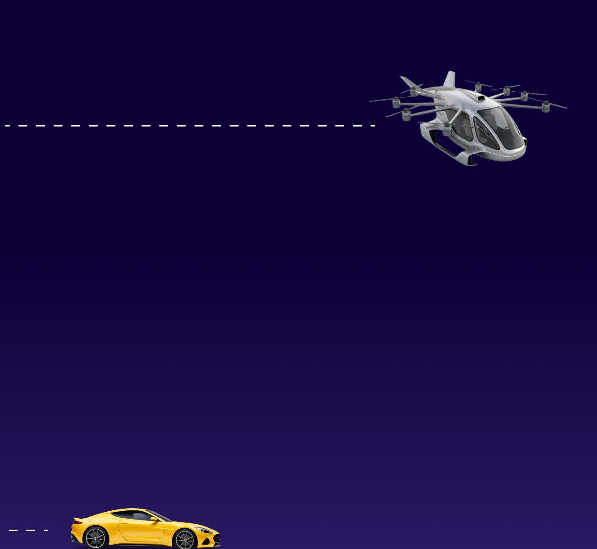
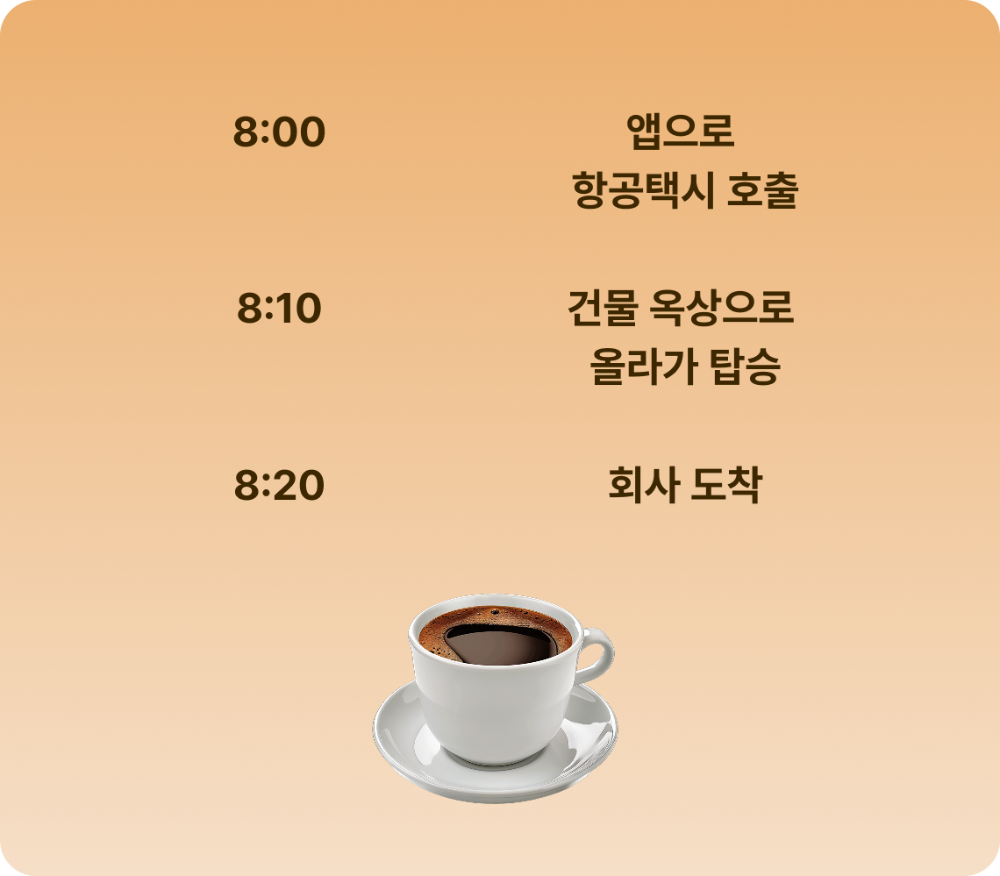

하늘을 나는 택시, 항공택시(UAM)

‘항공택시’는 일명 ‘드론택시'라고도 하죠. 전기동력 수직이착륙 기술을 기반으로, 도심 간 단거리 이동을 빠르고 조용하게 연결하는 하늘의 택시에요. 헬리콥터처럼 수직으로 뜨고 내리지만, 비행기처럼 날개로 효율적으로 날아갑니다. 게다가 전기로 움직여 탄소 배출은 거의 0, 소음은 자동차보다 조용합니다.

매일 아침 8시, 도심은 멈춘 듯한 정체 속에 잠깁니다. 버스와 자동차, 수많은 사람들의 시간이 길 위에서 흘러가죠. 하지만 도로 위의 혼잡을 벗어나려면, 전혀 다른 차원의 길이 필요합니다. 하늘길은 더 이상 영화 속 이야기가 아닙니다. 지상은 포화 상태이지만, 상공은 아직 비어 있습니다. 항공택시는 “비어 있는 하늘”을 도로로 바꾸고 있습니다.
항공택시는 기존의 항공기와 다릅니다. 헬리콥터처럼 수직으로 뜨지만, 비행기처럼 수평으로 날 수 있죠. 모든 것은 전기 모터로 구동되어, 연료가 필요 없습니다. 기존 헬리콥터의 1/100 소음, 탑승객은 대화가 가능할 정도의 조용한 비행. 전기, 경량 구조, 그리고 공기역학 설계의 결합으로 완성됐습니다.
이 정도면 헬리콥터보다 효율적이고, 자동차보다 훨씬 빠르죠.
차로는 1시간 걸리던 출근길이 단 10분. 비행 중에는 커피 한 잔의 여유를 즐길 수도 있습니다.
